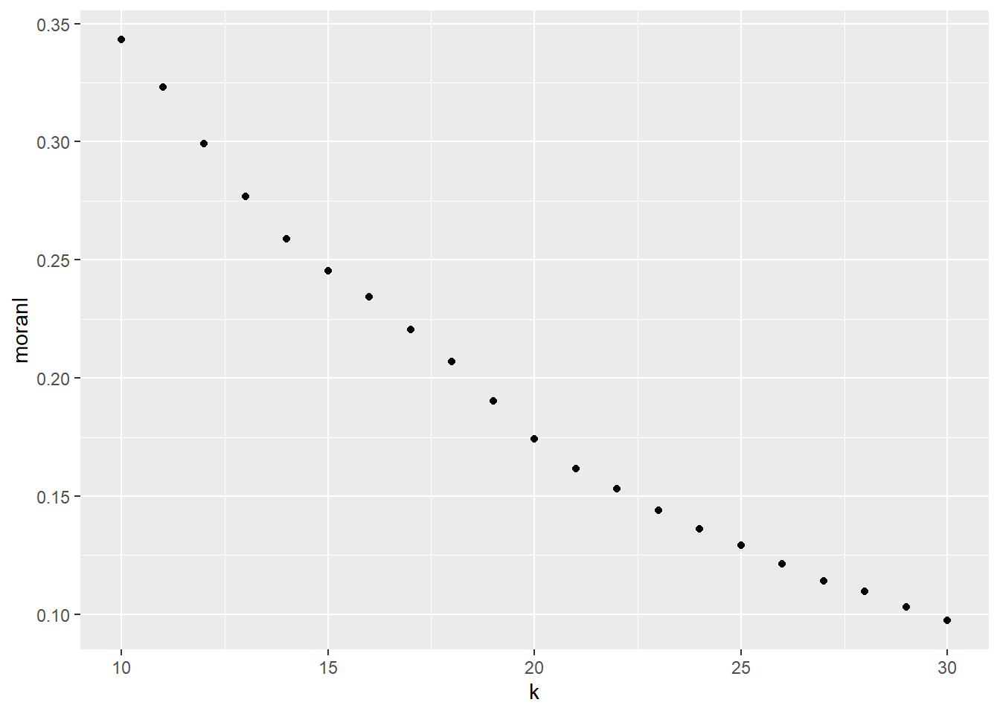

Chapter 35 Spatially Continuous Data III
NOTE: You can download the source files for this book from here. The source files are in the format of R Notebooks. Notebooks are pretty neat, because the allow you execute code within the notebook, so that you can work interactively with the notes.
In the previous practice you were introduced to the concept of fields/spatially continuous data.
If you wish to work interactively with this chapter you will need the following:
An R markdown notebook version of this document (the source file).
A package called
geog4ga3.
35.1 Learning objectives
Previously, in Chapter 33, we discussed some limitations of tile-based approaches, inverse distance weighting, and \(k\)-points mean. Particularly, these methods do not provide estimates of the uncertainty of point estimates when doing spatial interpolation. Trend surface analysis was introduced as a method for spatial interpolation that also provides estimates of the standard error. However, we saw that it is possible for the residuals of a trend surface model to be autocorrelated: this is an indication that there is still systematic variation in the residuals that was not fully captured by the model. To more fully exploit that residual pattern we need some additional tools. In this practice, you will learn some of said tools, as follows:
- About the implications of residual spatial pattern for predictions.
- The measurement of spatial dependence in fields.
- Variographic analysis.
35.2 Suggested reading
- Bailey TC and Gatrell AC (1995) Interactive Spatial Data Analysis, Chapters 5 and 6. Longman: Essex.
- Bivand RS, Pebesma E, and Gomez-Rubio V (2008) Applied Spatial Data Analysis with R, Chapter 8. Springer: New York.
- Brunsdon C and Comber L (2015) An Introduction to R for Spatial Analysis and Mapping, Chapter 6, Sections 6.7 and 6.8. Sage: Los Angeles.
- Isaaks EH and Srivastava RM (1989) An Introduction to Applied Geostatistics, CHAPTERS. Oxford University Press: Oxford.
- O’Sullivan D and Unwin D (2010) Geographic Information Analysis, 2nd Edition, Chapters 9 and 10. John Wiley & Sons: New Jersey.
35.3 Preliminaries
As usual, it is good practice to clear the working space to make sure that you do not have extraneous items there when you begin your work. The command in R to clear the workspace is rm (for “remove”), followed by a list of items to be removed. To clear the workspace from all objects, do the following:
Note that ls() lists all objects currently on the worspace.
Load the libraries you will use in this activity:
## Warning: replacing previous import 'plotly::filter' by 'stats::filter' when
## loading 'geog4ga3'## Warning: replacing previous import 'dplyr::lag' by 'stats::lag' when loading
## 'geog4ga3'Begin by loading the data file:
You can verify the contents of the dataframe:
## ID X Y V
## Length:470 Min. : 8.0 Min. : 8.0 Min. : 0.0
## Class :character 1st Qu.: 51.0 1st Qu.: 80.0 1st Qu.: 182.0
## Mode :character Median : 89.0 Median :139.5 Median : 425.2
## Mean :111.1 Mean :141.3 Mean : 435.4
## 3rd Qu.:170.0 3rd Qu.:208.0 3rd Qu.: 644.4
## Max. :251.0 Max. :291.0 Max. :1528.1
##
## U T
## Min. : 0.00 1: 45
## 1st Qu.: 83.95 2:425
## Median : 335.00
## Mean : 613.27
## 3rd Qu.: 883.20
## Max. :5190.10
## NA's :19535.4 Residual spatial pattern
In Chapter @ref{spatially-continuous-data-i} we used trend surface analysis for spatial interpolation. Trend surface analysis improves on methods such as Voronoi polygons, IDW, and \(k\)-point means by providing a built-in mechanism for estimating the uncertainty in the predictions. Let us quickly revisit this idea.
The objective of interpolation is to provide the following estimates: \[ \hat{z}_p + \hat{\epsilon}_p \]
Trend surface analysis provides interpolated values by generating a trend surface as follows: \[ \hat{z} = f(x, y) \] from which estimates of \(\hat{z}_p\) can be obtained by using suitable prediction coordinates \((x_p, y_p)\).
Next, although trend surface analysis does not provide an estimate of the prediction error \(\hat{\epsilon}_p\) (since we do not know the true value of the field at \(p\)), it provides confidence intervals for the prediction. In this way we can at the very least bound the prediction error as follows: \[ CI_{z_p} = [z_{p_{lwr}}, z_{p_{upr}}]. \]
As previously seen, however, use of trend surface analysis does not guarantee that the residuals of the model will be independent.
Lets revisit the model for Walker Lake.
As before, we first calculate the polynomial terms of the coordinates:
# Here we use `mutate()` to calculate the polynomial terms of the coordinates.
Walker_Lake <- mutate(Walker_Lake,
X3 = X^3, X2Y = X^2 * Y, X2 = X^2,
XY = X * Y,
Y2 = Y^2, XY2 = X * Y^2, Y3 = Y^3)And proceed to estimate the following cubic trend surface model, which provided the best fit to the data:
WL.trend3 <- lm(formula = V ~ X3 + X2Y + X2 + X + XY + Y + Y2 + XY2 + Y3,
data = Walker_Lake) #Recall use of the linear model for walker lake
summary(WL.trend3)##
## Call:
## lm(formula = V ~ X3 + X2Y + X2 + X + XY + Y + Y2 + XY2 + Y3,
## data = Walker_Lake)
##
## Residuals:
## Min 1Q Median 3Q Max
## -564.19 -197.41 7.91 194.25 929.72
##
## Coefficients:
## Estimate Std. Error t value Pr(>|t|)
## (Intercept) -8.620e+00 1.227e+02 -0.070 0.944035
## X3 1.533e-04 4.806e-05 3.190 0.001522 **
## X2Y 6.139e-05 3.909e-05 1.570 0.117000
## X2 -6.651e-02 1.838e-02 -3.618 0.000330 ***
## X 9.172e+00 2.386e+00 3.844 0.000138 ***
## XY -4.420e-02 1.430e-02 -3.092 0.002110 **
## Y 4.794e+00 2.040e+00 2.350 0.019220 *
## Y2 -1.806e-03 1.327e-02 -0.136 0.891822
## XY2 7.679e-05 2.956e-05 2.598 0.009669 **
## Y3 -4.170e-05 2.819e-05 -1.479 0.139759
## ---
## Signif. codes: 0 '***' 0.001 '**' 0.01 '*' 0.05 '.' 0.1 ' ' 1
##
## Residual standard error: 276.7 on 460 degrees of freedom
## Multiple R-squared: 0.1719, Adjusted R-squared: 0.1557
## F-statistic: 10.61 on 9 and 460 DF, p-value: 5.381e-15To examine the residuals, first we label them as “positive” or “negative”:
# The function `ifelse()` is used to label the residuals as "Positive" if they are greater than zero, or "Negative" if they are zero or less.
Walker_Lake <- Walker_Lake %>%
mutate(residual3 = ifelse(WL.trend3$residuals > 0,
"Positive",
"Negative"))Once the residuals have been labeled we can be plotted as follows:
ggplot(data = Walker_Lake,
aes(x = X, y = Y, color = residual3)) + # Note colour is only applied to results of positive or negative residials
geom_point() +
coord_equal() # Ensures equal scales for both axes
As seen before, there is considerable spatial autocorrelation as confirmed by Moran’s \(I\) coefficient:
WL.listw <- as.matrix(Walker_Lake[,2:3]) %>% # Take the coordinates of Walker Lake and convert to matrix.
knearneigh(k = 5) %>% # Find the 5 nearest neighbors of each observations.
knn2nb() %>% # Convert the nearest neighbors to `nb` object.
nb2listw() # Convert the `nb` object into spatial weights.
# Use Moran's test on the residuals of the trend surface model
moran.test(x = WL.trend3$residuals, listw = WL.listw)##
## Moran I test under randomisation
##
## data: WL.trend3$residuals
## weights: WL.listw
##
## Moran I statistic standard deviate = 17.159, p-value < 2.2e-16
## alternative hypothesis: greater
## sample estimates:
## Moran I statistic Expectation Variance
## 0.4625066528 -0.0021321962 0.0007332769The fact that the residuals are not independent has important implications for prediction. Consider the following thought experiment.
Imagine that you were asked to guess whether the residual was positive or negative at the locations indicated with triangles in the figure. These are locations where an observation was not made, and we only have the interpolated value of the variable according to the trend surface model:
ggplot(data = Walker_Lake,
aes(x = X, y = Y)) +
geom_point(aes(color = residual3)) +
geom_point(data = data.frame(x = c(55, 25, 210, 227), y = c(200, 90, 90, 230)), #We are adding coordinates for the triangles in the figure
aes(x = x, y = y), shape = 17, size = 3) +
coord_equal()
What would your guess be, and why? Would you say that your guess has a better than 50% chance of being right?
Now imagine that you were asked to guess whether the residual was positive or negative at the locations indicated with squares in the figure:
ggplot(data = Walker_Lake,
aes(x = X, y = Y)) +
geom_point(aes(color = residual3)) +
geom_point(data = data.frame(x = c(160, 240, 12, 120), y = c(38, 280, 240, 180)), #We are adding coordinates for the squares in the figure
aes(x = x, y = y), shape = 15, size = 3) +
coord_equal()
Again, what would your guess be, and why? Would you be able to guess this way if the residuals were random?
The fact that you can guess and be fairly sure about the quality of your guess is a consequence of the strong residual pattern. If the residuals were random, there would be no information left to use: the odds of a residual being positive or negative would essentially be 50%. However, when there is residual pattern, this information can be used to enhance the quality of your guesses about the residuals, or in other words, of the \(\hat{\epsilon}_p\) terms. At the very least you can guess whether they are positive or negative (therefore reducing their confidence intervals), but possibly you can learn even more from them, as will be seen later.
Before learning how to do this, however, we need to think more about the way in which we measure spatial pattern in spatially continuous data.
35.5 Measuring spatial dependence in spatially continuous data
In the preceding sections we used Moran’s \(I\) coefficient to measure spatial pattern. Moran’s \(I\) is, by design, a single-scale statistic, not unlike the case of nearest neighbor analysis in point patterns. The reason for this is that Moran’s \(I\) is limited to detecting pattern at the scale at which the spatial weights are defined: for instance, at the level of adjacency, contiguity, or \(k\)-nearest neighbors.
While this makes sense (mostly) in the case of area data, since the areas inherently introduce spatial discontinuities, it makes less sense in the case of fields, where the underlying process is typically smooth. In fact, more often we are interested in exploring the properties of the pattern over the field, not just the nearest neighbors.
One way of extending Moran’s \(I\) analysis to multiple scales is by means of the correlogram. The correlogram is simply a sequence of Moran’s \(I\) coefficients computed at different scales.
Consider for example the following sequence of coefficients, computed for \(k\)=10 neighbors to \(k\)=30 neighbors. Notice how the for loop calculates spatial weights using the designated number of neighbors, before calculating Moran’s \(I\).
k <- c(10:30) # Initialize the values of k.
moranI <- numeric(length = length(k)) # Initialize an empty vector to store the results of calculating Moran's I
correlogram <- data.frame(k, moranI) # Initialize an empty dataframe to store the values of k and moranI
# A `for` loop is a way of repeating instructions a defined number of times, here from 1 to the length of vector `k`.
for(i in 1:length(k)){
listwk <- Walker_Lake[,2:3] %>%
as.matrix() %>%
knearneigh(k = k[i]) %>% # Use the ith element of vector `k` to find the nearest neighbors
knn2nb() %>%
nb2listw()
m <- moran.test(x = WL.trend3$residuals, listw = listwk) #Moran test for residuals
correlogram$moranI[i] <- m$estimate[1] #calling moran's I values from correlogram dataframe
}Given the values of Moran’s \(I\) at different scales (i.e., values of \(k\)), the correlogram can be plotted as:

As can be seen in the plot, spatial autocorrelation tends to decline as the number of nearest neighbors used in the test grows - in other words, as the scale of the test increases. This is a common occurrence: when autocorrelation is present, observations tend to be more similar to their closest neighbors than to their more distant neighbors.
The use of \(k\)-nearest neighbors points to a problem, however. The scale of the process does not depend on distance, which would be a more natural metric for a continuous process. In this case, \(k\)-nearest neighbors were used to ensure that each sum in the coefficient had the same number of observations. However, this means that “neighborhoods” will be geographically smaller where the observations are more dense, and larger where they are sparse.
While this issue is not insurmountable (for instance, instead of \(k\)-neares neighbors we could have used the neighbors found at a certain distance), it points out to the fact that Moran’s \(I\) is not by design well suited for the analysis of spatially continuous data.
A different approach, known as variographic analysis, is introduced next.
35.6 Variographic analyisis
To introduce variographic analysis it is worthwhile to recall the definition of the covariance between two variables, say \(X\) and \(Y\): \[ C(X,Y) = E[{(X_i^2 - \bar{X})(Y_i^2 - \bar{Y})}] \] Where \(\bar{X}\) and \(\bar{Y}\) are the means of \(X\) and \(Y\) respectively.
The expectation operator \(E[]\) turns out to be the mean: \[ C(X,Y) = \frac{1}{n}\sum_{i=1}^{n}{(X_i^2 - \bar{X})(Y_j^2 - \bar{Y})} \]
The observations \(X_i\) and \(Y_i\) in the covariance formula can be seen as a points in a scatterplot, with the axes shifted to the means of \(X\) and \(Y\), as shown in Figure 1.

Figure 1. Observations of the covariance as a scatterplot
The autocovariance of variable \(z\) can be defined in a similar way, the difference being that instead of two variables, it is the covariance of a variable with itself but at a different location (i.e., between locations \(i\) and \(j\)): \[ C(z_i,z_j) = E[{(z_i^2 - \bar{z})(z_j^2 - \bar{z})}] \]
To implement the spatial autocovariance we need some criterion to explicitly define the spatial relationship between locations \(i\) and \(j\). A useful criterion in this case is as follows:
\[ w_{ij}(h)=\bigg\{\begin{array}{l l} 1\text{ if } d_{ij} = h\\ 0\text{ otherwise}\\ \end{array} \] In other words, \(i\) and \(j\) are considered to be spatially related for the purposes of calculating the autocovariance, if the distance between the two locations is equal to some predefined spatial lag \(h\).
The above criterion makes explicit the assumption that the autocovariance is a function of the separation \(h\) between two observations, but not of other factors, such as the angle between observations. This assumption is called isotropy.
Further, if we assume that the variance of \(z\) is constant, and the correlation between observations does not depend on location (an assumption called intrinsic stationarity), we can pool observations from accross the map to create a scatterplot to form the basis of the autocovariance calculations.
Consider the (regular) arrangement of observations spaced at \(h\) in Figure 2. Each observation generally has four neighbors, with the exception of those in the edges, which have fewer neighbors at spatial lag \(h\). This means that most observations will contribute four points to the scatterplot (\(z_i\) and \(z_j\), \(z_k\), \(z_l\), and \(z_m\)), and others will contribute three or at least two (those in the corners).

Figure 2. Finding spatial pairs for the calculation of the autocovariance
Given those pairs of observations, the autocovariance at lag \(h\) can be calculated as: \[ C_{z}(h) = \frac{\sum_{i=1}^{n}{w_{ij}(h)(z_i^2 - \bar{z})(z_j^2 - \bar{z})}}{\sum_{i=1}^n{w_{ij}(h)}} \]
Changing the spatial lag \(h\) allows us to calculate the autocovariance at different scales. The plot of the autocovariance at different scales is called a covariogram.
A related quantity that is more commonly used (mainly for historical reasons) is the semivariance.
The semivariance is defined as follows, calculated based on the difference between \(z_i\) and \(z_j\): \[ \hat{\gamma}_{z}(h) = \frac{\sum_{i=1}^{n}{w_{ij}(h)(z_i - z_j)^2}}{2\sum_{i=1}^n{w_{ij}(h)}} \] The plot of the semivariance at different lags \(h\) is called a semivariogram.
The covariogram and semivariogram are related by the following formula: \[ C_{z}(h) =\sigma^2 - \hat{\gamma}_{z}(h) \] where \(\sigma^2\) is the sample variance.
The condition that \(d_{ij} = h\) is, with the exception of gridded data, too strict, and is often relaxed in the following way:
\[ w_{ij}(\tilde{h})=\bigg\{\begin{array}{l l} 1\text{ if } d_{ij}\simeq h\\ 0\text{ otherwise}\\ \end{array} \]
In this way, the distance between observations \(i\) and \(j\) does not need to be exactly, but can be an approximation. The approximation can be defined explicitly as follows:
\[ w_{ij}(\tilde{h})=\bigg\{\begin{array}{l l} 1\text{ if } h - \Delta h < d_{ij} < h + \Delta h\\ 0\text{ otherwise}\\ \end{array} \] Instead of forming pairs with observations that are at exactly a distance \(h\) (which would lead in many cases to too few pairs), pairs are formed with observations at approximately lag \(h\) (or \(\tilde{h}\)), with a tolerance given by \(\Delta h\).
Analysis based on the semivariogram (called variographic analysis) is implemented in R in the gstat package.
We will illustrate the use of the semivariogram by means of the Walker Lake data. The package gstat accepts simple features objects of the sf package, so we convert our dataframe into such an object:
## [1] "sf" "tbl_df" "tbl" "data.frame"The empirical semivariogram is calculated by means of the gstat::variogram function, as follows:
variogram_z <- variogram(V ~ 1, data = Walker_Lake.sf) # `variogram()` calculates the sample semivariogram from data, or if a linear model is given, for the residuals; in this case, the formula `V ~ 1` means that we are not using a model
ggplot(data = variogram_z, aes(x = dist, y = gamma)) + #Note we are plotting the data of 'variogram_z'
geom_point() +
geom_text(aes(label = np), nudge_y = -1500) + # Add labels to indicate the number of pairs of observations used in the calculation of each point in the variogram
xlab("Distance") + ylab("Semivariance")
The numbers indicate the number of pairs of observations used to calculate the semivariance at the corresponding lag.
Since the sample variance is:
## [1] 90694.59It follows that the covariogram in this case is:
ggplot(data = variogram_z, aes(x = dist, y = s2 - gamma)) +
geom_point() +
geom_text(aes(label = np), nudge_y = -1500) +
xlab("Distance") +
ylab("Autocovariance")
As expected, the autocovariance (and hence, the autocorrelation) is stronger at short spatial lags, and declines at larger spatial lags.
The above plots are the empirical semivariogram and covariogram. These plots are used to model a theoretical semivariogram, a function that can be used to estimate spatial dependence at any lag within the domain of the - and not just at the distances for which we have points in the empirical variogram.
Since the semivariogram is the expectation of the square, the function selected for modeling the theoretical semivariogram must be non-negative. Several functions satisfy this condition, a list of which are available in gstat as shown below:
## short long
## 1 Nug Nug (nugget)
## 2 Exp Exp (exponential)
## 3 Sph Sph (spherical)
## 4 Gau Gau (gaussian)
## 5 Exc Exclass (Exponential class/stable)
## 6 Mat Mat (Matern)
## 7 Ste Mat (Matern, M. Stein's parameterization)
## 8 Cir Cir (circular)
## 9 Lin Lin (linear)
## 10 Bes Bes (bessel)
## 11 Pen Pen (pentaspherical)
## 12 Per Per (periodic)
## 13 Wav Wav (wave)
## 14 Hol Hol (hole)
## 15 Log Log (logarithmic)
## 16 Pow Pow (power)
## 17 Spl Spl (spline)
## 18 Leg Leg (Legendre)
## 19 Err Err (Measurement error)
## 20 Int Int (Intercept)The anatomy of a semivariogram includes a range, a sill, and possibly a nugget. These elements are shown in Figure 3.

Figure 3. Elements of a semivariogram model
Since the semivariogram is calculated based on the square of the differences \(z_i - z_j\), the smaller the semivariance is, the more similar observations tend to be. In principle, the semivariogram begins at zero, because at distance zero an observation is identical to itself (i.e., \(z_i - z_i\)). The range is the distance at which the sill is reached. The sill, on the other hand, is the point at which the semivariance becomes simply the variance, meaning that there is no more or less similarity beween observations than would be implied by the variance of the sample.
An additional element is the nugget. While the semivariogram in principle begins at zero, sometime discontinuities near the origin can be observed. The terminology is from mining, and reflects the fact that a nugget could be very different from the material around it, hence the jump in the semivariogram.
Some theoretical functions are shown next.
Exponential semivariogram:

Spherical semivariogram:

Gaussian semivariogram:

These plots illustrate some differences in the behavior of the models. For indentical parameters, the Gaussian model provides smoother changes near the origin. The spherical model reaches the sill more rapidly than the other models.
To fit a theoretical semivariogram to the empirical one, the function fit.variogram is used:
The results of which can be plotted after passing the model the the function variogramLine:
gamma.t <- variogramLine(variogram_z.t, maxdist = 130) #Notice how 'maxdist' is 130, and the model does not exceed that value.
ggplot(data = variogram_z, aes(x = dist, y = gamma)) +
geom_point(size = 3) +
geom_line(data = gamma.t, aes(x = dist, y = gamma)) +
xlab("Distance") + ylab("Semivariance")
A set of models can be passed as an argument to fit.variogram, in which case the value (output) of the function is the model that provides the best fit to the empirical semivariogram:
variogram_z.t <- fit.variogram(variogram_z, model = vgm("Exp", "Sph", "Gau")) #Choosing the best fit again
variogram_z.t## model psill range
## 1 Nug 4045.567 0.00000
## 2 Exp 90703.773 12.52591In this case, it can be seen that the best fitting model is the exponential, as follows:
gamma.t <- variogramLine(variogram_z.t, maxdist = 130)
ggplot(data = variogram_z, aes(x = dist, y = gamma)) +
geom_point(size = 3) +
geom_line(data = gamma.t, aes(x = dist, y = gamma)) +
xlab("Distance") + ylab("Semivariance")
For comparison, we will do the variographic analsysis of a simulated random dataset.
Generate coordinates for observations and expand on a grid:
#We are generating a regular sequence of coordinates by means of 'seq'
x <- seq(from = 0, to = 250, by = 10)
y <- seq(from = 0, to = 290, by = 10)
df <- expand.grid(x = x, y = y) #df is our dataframe Then, create a random variable for this coordinates:
set.seed(100) #'set.seed' is used for replicability: it uses the seed in the argument for generating random numbers
df$z <- rnorm(n = 780, mean = 500, sd = 300)Finally, convert to a simple features object:
The empirical variogram is:
variogram_df <- variogram(z ~ 1, data = df) #establishing the foundation of the variogram
ggplot(data = variogram_df, aes(x = dist, y = gamma)) +
geom_point() +
geom_text(aes(label = np), nudge_y = -1500) +
ylim(c(0, 98100)) +
xlab("Distance") + ylab("Semivariance") #addig labels to axes
The range of the semivariogram appears to be zero, or alternatively, there seems to be a pure nugget effect. This is as expected. Since the data are spatially random, they are not more similar at shorter distances than they would be at longer distances.
References
Bailey, T. C., and A. C. Gatrell. 1995. Interactive Spatial Data Analysis. Book. Essex: Addison Wesley Longman.
Bivand, R. S., E. J. Pebesma, and V. Gómez-Rubio. 2008. Applied Spatial Data Analysis with R. Book. New York: Springer Science+Business Media.
Brunsdon, Chris, and Lex Comber. 2015. An Introduction to R for Spatial Analysis and Mapping. Book. Sage.
Isaaks, E. H., and R. M. Srivastava. 1989. Applied Geostatistics. Book. New York: Oxford University Press.
O’Sullivan, David, and David Unwin. 2010. Geographic Information Analysis. Book. 2nd. Edition. Hoboken, New Jersey: John Wiley & Sons.